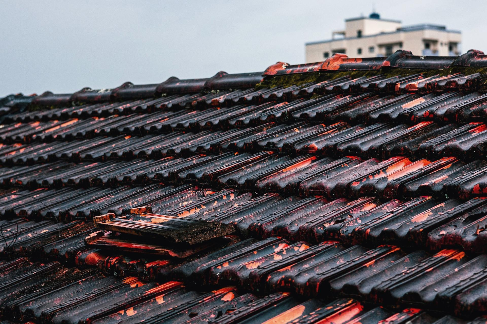
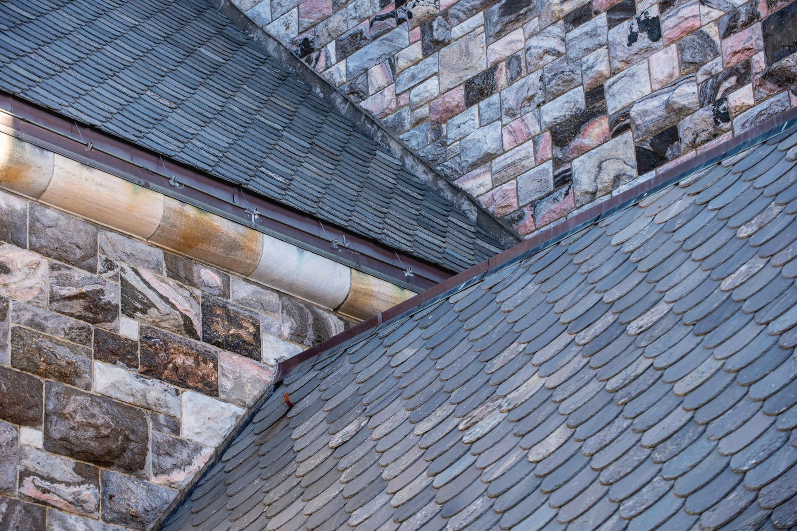
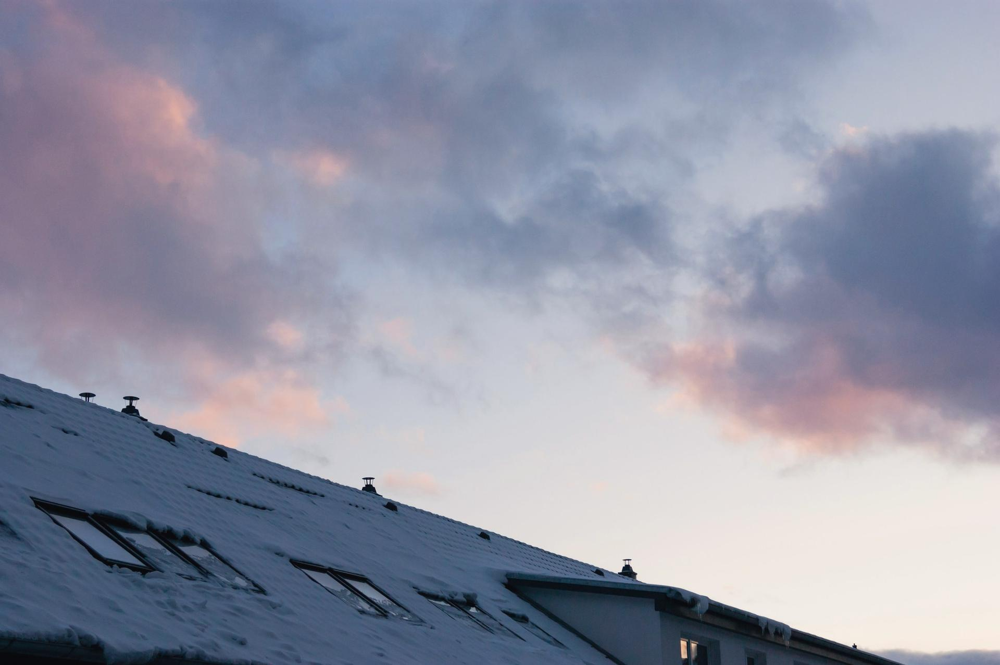
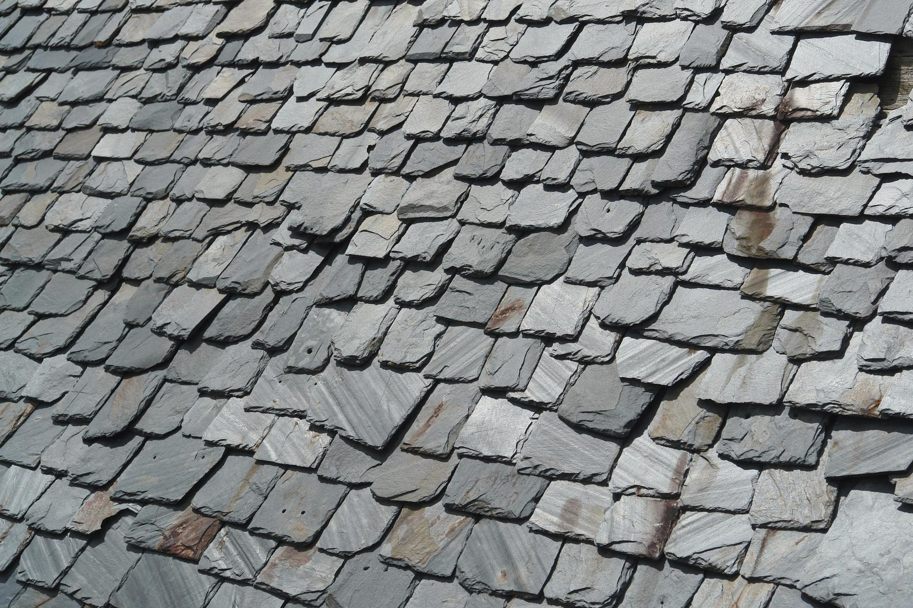

CEJKOV, SK
STRECHY · 2026
Nové strechy, rekonštrukcie, klampiarske a tesárske práce. Strechy, ktoré ochránia všetko pod nimi.
BPBAŇAS PETER
CEJKOV A OKOLIE
O NÁS

01 / 03
STRECHY
Oplechovanie, žľaby a strešné krytiny. Nezáväzný dopyt →

02 / 03
STRECHY
Nové strechy aj rekonštrukcie, od krovu po krytinu. Nezáväzný dopyt →
03 / 03
STRECHY
Krovy, prístrešky a drevené konštrukcie. Nezáväzný dopyt →
ĎALŠIE SLUŽBY
Škridla, plech aj šindeľ, položené tak, aby nezatekalo.
Žľaby, zvody a oplechovanie komínov či atík.
AKO PRACUJEME
Napíšete nám, čo potrebujete. Stačí pár viet alebo fotka.
Dohodneme termín a pozrieme sa na to priamo na mieste.
Dostanete jasnú ponuku s cenou a termínom.
Prácu urobíme poriadne a po sebe upraceme.

KONTAKT
Pošlite nám fotku strechy a napíšte, čo Vás trápi. Ozveme sa s návrhom riešenia.